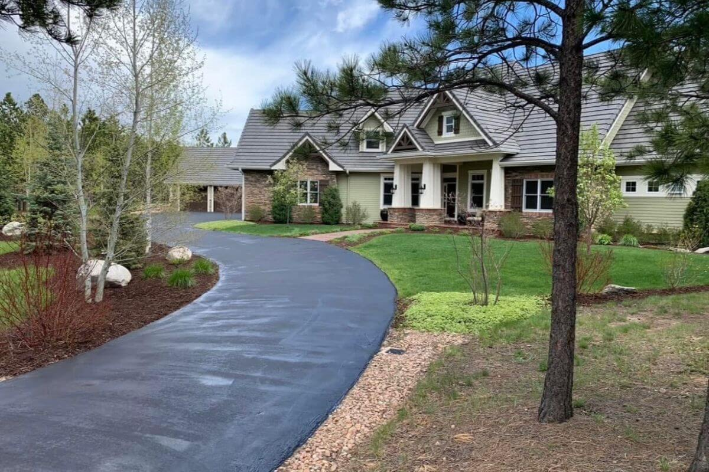
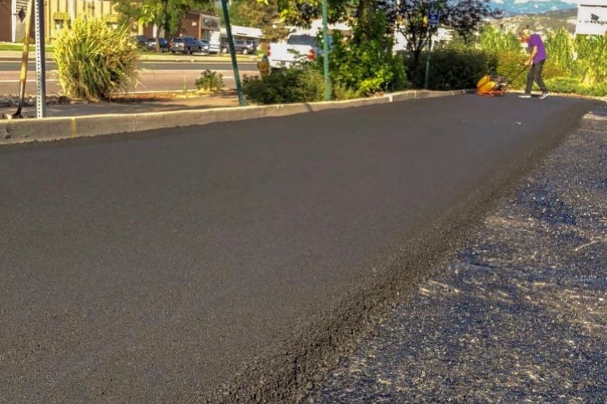
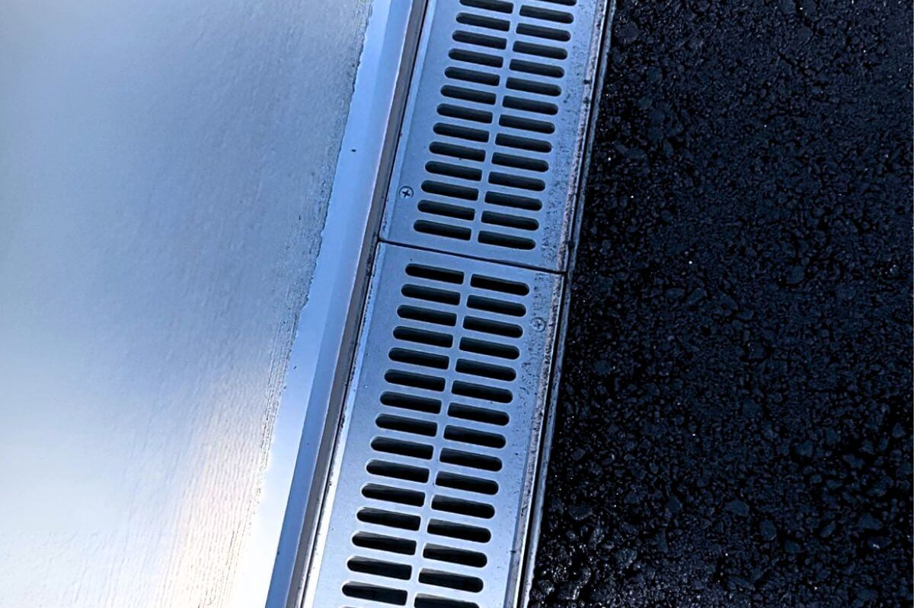

We specialize in the architectural approach. From custom courtyard designs to high-altitude mountain access, we ensure your driveway is more than just a utility—it is a lasting asset designed for the specific geology of your property.

Business continuity is our priority. We coordinate with commercial neighbors to execute phased paving or weekend schedules, ensuring your revenue remains uninterrupted while we strengthen your site's infrastructure.

We believe in doing one thing better than anyone else: the finish. While we handle all dirt work and grading prior to paving, we partner with specialized General Contractors for major site drainage and ADA compliance to ensure every project meets the highest standards.